Conversions (pycraf.conversions)¶
Introduction¶
The conversions sub-package contains various functions to convert
and calculate power flux densities, electrical field strengths, transmitted
and received powers from each other. Routines that link antenna areas and
gains are also present. With the free_space_loss function
one can determine the free-space loss for a given frequency and distance
between transmitter (Tx) and receiver (Rx). Furthermore, several useful
Decibel units are defined (see Reference/API).
Getting Started¶
Using the conversions package is really simple:
>>> from astropy import units as u
>>> from pycraf import conversions as cnv
>>> A_eff = 10 * u.m ** 2 # effective area
>>> A_geom = 20 * u.m ** 2 # geometric area
>>> eta_a = 50 * u.percent # antenna efficiency
>>> print('A_eff = {0.value:.1f} {0.unit}'.format(
... cnv.eff_from_geom_area(A_geom, eta_a))
... )
A_eff = 10.0 m2
>>> print('A_geom = {0.value:.1f} {0.unit}'.format(
... cnv.geom_from_eff_area(A_eff, eta_a))
... )
A_geom = 20.0 m2
Because all function parameters and return values are Astropy Quantities
(see Quantity), unit conversion is automatically performed:
>> cnv.eff_from_geom_area(10 * u.m ** 2, 50 * u.percent) # doctest: +FLOAT_CMP
<Quantity 5.0 m2>
>> cnv.eff_from_geom_area(10 * u.m ** 2, 0.5 * cnv.dimless) # doctest: +FLOAT_CMP
<Quantity 5.0 m2>
>> cnv.eff_from_geom_area(1 * u.km ** 2, 10 * u.percent) # doctest: +FLOAT_CMP
<Quantity 100000.0 m2>
Warning
It is not possible to omit the unit, even if a quantity is dimensionless
pycraf would raise an exception if one tried:
>> cnv.eff_from_geom_area(10 * u.m ** 2, 0.5)
TypeError: Argument 'eta_a' to function 'eff_from_geom_area' has no
'unit' attribute. You may want to pass in an astropy Quantity instead.
Note
A Jupyter tutorial notebook about the conversions package is
provided in the pycraf repository on GitHub.
Using pycraf.conversions¶
Decibel units¶
In the conversions module, several Decibel units are defined
that often occur in spectrum-management tasks. Examples are the
 unit or
unit or ![\mathrm{dBm}\equiv\mathrm{dB[mW]}](../_images/math/87542047c083844bd28c877c34bed1edf82437fa.png) . In
Python these are defined with the help of the
. In
Python these are defined with the help of the units package, e.g.:
>>> from astropy import units as u
>>> dB_W = u.dB(u.W)
>>> dB_W_m2_Hz = u.dB(u.W / u.m ** 2 / u.Hz)
>>> dB_uV_m = u.dB(u.uV ** 2 / u.m ** 2)
Note
The ![\mathrm{dB}[\mu\mathrm{V}^2 / \mathrm{m}^2]](../_images/math/538d7edf9010c9c351e76620cd3401abd8a382ea.png) unit is a bit
special. Engineers will usually call this symbol
unit is a bit
special. Engineers will usually call this symbol
![\mathrm{dB}[\mu\mathrm{V} / \mathrm{m}]](../_images/math/86517b90a706850ef24a6a5be6468fa618a95ef8.png) , but strictly speaking
the power of the electrical field is referred to, which means that
the amplitude of the E-field has to be squared.
, but strictly speaking
the power of the electrical field is referred to, which means that
the amplitude of the E-field has to be squared.
In fact, if one would omit the squaring from the definition, the unit
would not work in the equations, because the units framework
would notice an inconsistency of the units.
Working with the Decibel units is easy:
>>> from pycraf import conversions as cnv
>>> power = 1 * cnv.dB_W
>>> power
<Decibel 1.0 dB(W)>
>>> power.to(u.W)
<Quantity 1.2589254117941673 W>
>>> print(power.to(u.W))
1.2589254117941673 W
Often, one wants to do some formatting in the print function, which works as usual:
>>> print('{:.1f}'.format(power.to(u.W)))
1.3 W
Astropy units provide even some additional formatting options:
>>> print('{0.value:.1f} {0.unit}'.format(power.to(u.W)))
1.3 W
>>> print('{0.value:.1f} {0.unit:FITS}'.format(1 * u.m / u.s))
1.0 m s-1
Warning
Under some circumstances, the automatic conversion from the Decibel
to the associated linear unit can fail. This may get fixed in a future
version of Astropy. It helps to construct the Quantities via
multiplication, avoiding the Quantity constructor, i.e.,
1 * cnv.dB instead of u.Quantity(1, cnv.dB).
Conversion formulae¶
For a complete list of the functions provided in the conversions
package, see the Reference/API section below. All functions expect
the parameters to have appropriate units, and will return a
Quantity, i.e. a value with a unit. This makes it sometimes
a bit verbose to write code, but has the invaluable advantage that one
avoids mistakes in the calculations that come from using the wrong units.
For example, in the various ITU-R Recommendations, the described algorithms often assume the quantities to be in a certain unit. In pycraf all functions are defined in a way, that input parameters are first converted to the correct unit before feeding the values into the ITU-R algorithms.
The following quantities are of interest in compatibility studies:
- Distance between transmitter and receiver:

- Frequency of radiation:

- Wavelength of radiation: 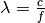
- Geometric antenna area:

- Effective antenna area:
- Antenna efficiency: 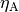
- Transmitter/receiver gain,
 ,
,  :
: 
- Pointing flux: 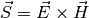
- Power flux density:
 with
with 
- Spectral power flux density,
 , with: 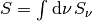
, with: 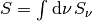 - Transmitted power, 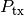, with

- Received power,

- Free-space loss: 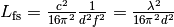
A few examples:
>>> from astropy import units as u
>>> from pycraf import conversions as cnv
>>> frequency = 10 * u.GHz
>>> S = 10 * u.Jy * u.MHz
>>> E_rx = -30 * cnv.dB_uV_m
>>> distance = 10 * u.km
>>> G_tx = 20 * cnv.dBi
>>> G_rx = 10 * cnv.dBi
>>> P_rx = -10 * cnv.dBm
>>> P_tx = 20 * cnv.dBm
>>> cnv.efield_from_powerflux(S).to(cnv.dB_uV_m)
<Decibel -44.23969433034762 dB(uV2 / m2)>
>>> cnv.powerflux_from_efield(E_rx).to(cnv.dB_W_m2)
<Decibel -175.7603056696524 dB(W / m2)>
>>> cnv.ptx_from_powerflux(S, distance, G_tx).to(cnv.dB_W)
<Decibel -119.00790135977903 dB(W)>
>>> cnv.powerflux_from_ptx(P_tx, distance, G_tx).to(cnv.dB_W_m2)
<Decibel -80.99209864022097 dB(W / m2)>
>>> cnv.prx_from_powerflux(S, frequency, G_rx).to(cnv.dB_W)
<Decibel -221.4556845816624 dB(W)>
>>> cnv.powerflux_from_prx(P_rx, frequency, G_rx).to(cnv.dB_W_m2)
<Decibel -8.544315418337588 dB(W / m2)>
>>> cnv.free_space_loss(distance, frequency)
<Decibel -132.44778322188336 dB>
>>> cnv.prx_from_ptx(P_tx, G_tx, G_rx, distance, frequency).to(cnv.dB_W)
<Decibel -112.44778322188337 dB(W)>
>>> cnv.ptx_from_prx(P_rx, G_tx, G_rx, distance, frequency).to(cnv.dB_W)
<Decibel 62.44778322188338 dB(W)>
See Also¶
- Astropy Units and Quantities package, which is used extensively in pycraf.
Reference/API¶
pycraf.conversions Package¶
Contains functions to convert power flux densities, field strengths, transmitted and received powers at certain distances and frequencies into each other. Furthermore, some convenience decibel-Scales are defined.
The following Decibel units are available:
| Unit | Alias | Definition |
|---|---|---|
 |
dimless | u.dimensionless_unscaled |
| ,|dBi|,|dBc| |
dB, dBi, dBc | u.dB(dimless) |
| 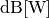 | dB_W | u.dB(u.W) |
![\mathrm{dB}[\mathrm{W} / \mathrm{Hz}]](../_images/math/7f6b5f028404a8af072cda2823f4ba5feea77a8e.png) |
dB_W_Hz | u.dB(u.W / u.Hz) |
| 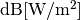 | dB_W_m2 | u.dB(u.W / u.m ** 2) |
![\mathrm{dB}[\mathrm{W} / \mathrm{m}^2 / \mathrm{Hz}]](../_images/math/692e75bb1eba2fdbb36ced89df8d5f8a4e865912.png) |
dB_W_m2_Hz | u.dB(u.W / u.m ** 2 / u.Hz) |
![\mathrm{dB}[\mathrm{Jy} \cdot \mathrm{Hz}]](../_images/math/b617235be2a6024db94d7d98b000731b2c17bdc0.png) |
dB_Jy_Hz | u.dB(u.Jy * u.Hz) |
| 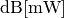 | dBm = dB_mW | u.dB(u.mW) |
![\mathrm{dB}[\mathrm{mW} / \mathrm{MHz}]](../_images/math/0da7637d11c4489326a7ad6de547972dbe1927b9.png) |
dBm_MHz | u.dB(u.mW / u.MHz) |
|
dB_uV_m | u.dB(u.uV ** 2 / u.m ** 2) |
| 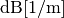 | dB_1_m | u.dB(1 / u.m) |
u = astropy.units
Functions¶
antfactor_from_gain(gain, freq, zi) |
Antenna factor from antenna gain, given frequency and impedance. |
eff_area_from_gain(gain, freq) |
Effective antenna area from antenna gain, given frequency. |
eff_from_geom_area(geom_area, eta_a) |
Effective antenna area from geometric area, given antenna efficiency. |
efield_equivalency() |
units equivalency to handle log-scale E-field units. |
efield_from_powerflux(powerflux) |
E-field strength from power flux density. |
efield_from_ptx(ptx, dist, gtx) |
E-field strength measured at distance from transmitter power. |
eta_a_from_areas(geom_area, eff_area) |
Antenna efficiency from geometric and effective antenna areas. |
free_space_loss(dist, freq) |
Free-space loss of a propagating radio wave. |
gain_from_antfactor(antfactor, freq, zi) |
Antenna gain from antenna factor, given frequency and impedance. |
gain_from_eff_area(eff_area, freq) |
Antenna gain from effective antenna area, given frequency. |
geom_from_eff_area(eff_area, eta_a) |
Geometric antenna area from effective area, given antenna efficiency. |
powerflux_from_efield(efield) |
Power flux density from E-field strength. |
powerflux_from_prx(prx, freq, grx) |
Power flux density from received power. |
powerflux_from_ptx(ptx, dist, gtx) |
Power flux density from transmitter power. |
prx_from_powerflux(powerflux, freq, grx) |
Received power from power flux density. |
prx_from_ptx(ptx, gtx, grx, dist, freq) |
Received power from transmitted power. |
ptx_from_efield(efield, dist, gtx) |
Transmitter power from E-field strength measured at distance. |
ptx_from_powerflux(powerflux, dist, gtx) |
Transmitter power from power flux density. |
ptx_from_prx(prx, gtx, grx, dist, freq) |
Transmitted power from received power. |